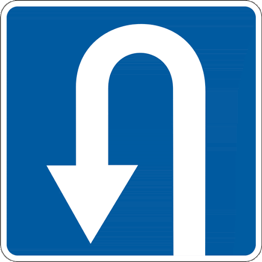
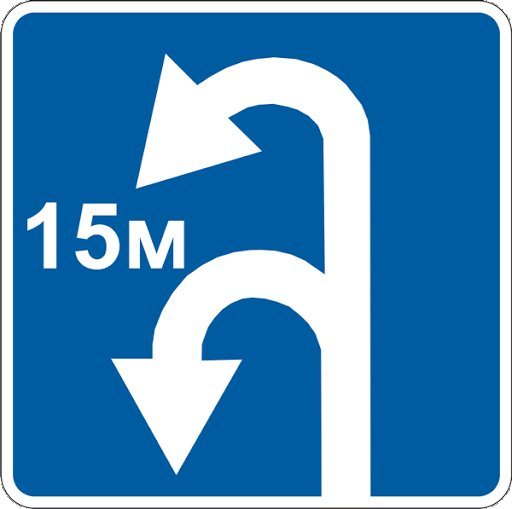

10. Початок руху та зміна його напрямку
10.1. Перед початком руху, перестроюванням та будь-якою зміною напрямку руху водій повинен переконатися, що це буде безпечним і не створить перешкод або небезпеки іншим учасникам руху.
10.2. Виїжджаючи на дорогу з житлової зони, дворів, місць стоянки, автозаправних станцій та інших прилеглих територій, водій повинен перед проїзною частиною чи тротуаром дати дорогу пішоходам і транспортним засобам, що рухаються по ній, а з’їжджаючи з дороги – велосипедистам і пішоходам, напрямок руху яких він перетинає.
10.3. У разі перестроювання водій повинен дати дорогу транспортним засобам, що рухаються в попутному напрямку по тій смузі, на яку він має намір перестроїтися.
За одночасного перестроювання транспортних засобів, що рухаються в одному напрямку, водій, який знаходиться ліворуч, повинен дати дорогу транспортному засобу, що знаходиться праворуч.
10.4 Перед поворотом праворуч та ліворуч, у тому числі в напрямку головної дороги, або розворотом водій повинен завчасно зайняти відповідне крайнє положення на проїзній частині, призначеній для руху в цьому напрямку, крім випадків, коли здійснюється поворот у разі в’їзду на перехрестя, де організовано круговий рух, напрямок руху визначено дорожніми знаками чи дорожньою розміткою або рух можливий лише в одному напрямку, установленому конфігурацією проїзної частини, дорожніми знаками чи розміткою.
Водій, що виконує поворот ліворуч або розворот поза перехрестям з відповідного крайнього положення на проїзній частині даного напрямку, повинен дати дорогу зустрічним транспортним засобам, а при виконанні цих маневрів не з крайнього лівого положення на проїзній частині – і попутним транспортним засобам. Водій, що виконує поворот ліворуч, повинен дати дорогу попутним транспортним засобам, які рухаються попереду нього і виконують розворот.
За наявності трамвайної колії посередині проїзної частини водій нерейкового транспортного засобу, що виконує поворот ліворуч або розворот поза перехрестям, повинен дати дорогу трамваю.
10.5. Поворот необхідно виконувати так, щоб під час виїзду з перехрещення проїзних частин транспортний засіб не опинився на смузі зустрічного руху, а у разі повороту праворуч слід рухатися ближче до правого краю проїзної частини. Виїзд з перехрестя, де організовано круговий рух, може здійснюватися з будь-якої смуги, якщо напрямок руху не визначено дорожніми знаками чи розміткою і це не створить перешкод транспортним засобам, що рухаються в попутному напрямку праворуч.
10.6. Якщо транспортний засіб через свої габарити або інші причини не може виконати поворот чи розворот з відповідного крайнього положення, дозволяється відступити від вимог пункту 10.4 цих Правил, якщо це не суперечить вимогам заборонних чи наказових дорожніх знаків, дорожньої розмітки та не створить небезпеки чи перешкод іншим учасникам руху. У разі потреби, для забезпечення безпеки дорожнього руху, слід звернутися за допомогою до інших осіб.
10.7. Розворот забороняється:
а) на залізничних переїздах;
б) на мостах, шляхопроводах, естакадах і під ними;
в) у тунелях;
г) за видимості дороги менше 100 м хоча б в одному напрямку;
ґ) на пішохідних переходах і ближче 10 м від них з обох боків, крім випадку дозволеного розвороту на перехресті;
д) на автомагістралях, а також на дорогах для автомобілів, за винятком перехресть і місць, позначених дорожніми знаками 5.26 чи 5.27.

5.26

5.27
10.8. Якщо в місці з’їзду з дороги є смуга гальмування, водій, який має намір повернути на іншу дорогу, повинен своєчасно перестроїтися на цю смугу і знижувати швидкість тільки на ній.
Якщо в місці в’їзду на дорогу є смуга розгону, водій має рухатися по ній і вливатися в транспортний потік, даючи дорогу транспортним засобам, що рухаються по цій дорозі.
10.9. Під час руху транспортного засобу заднім ходом водій не повинен створювати небезпеки чи перешкод іншим учасникам руху. Для забезпечення безпеки руху він у разі потреби повинен звернутися за допомогою до інших осіб.
10.10. Забороняється рух транспортних засобів заднім ходом на автомагістралях, дорогах для автомобілів, залізничних переїздах, пішохідних переходах, перехрестях, мостах, шляхопроводах, естакадах, у тунелях, на в’їздах і виїздах з них, а також на ділянках доріг з обмеженою оглядовістю чи недостатньою видимістю.
Дозволяється рух заднім ходом на дорогах з одностороннім рухом за умови дотримання вимог пункту 10.9 цих Правил та неможливості під’їхати до об’єкта іншим чином.
10.11. У разі коли траєкторії руху транспортних засобів перетинаються, а черговість проїзду не обумовлена цими Правилами, дати дорогу повинен водій, до якого транспортний засіб наближається з правого боку.